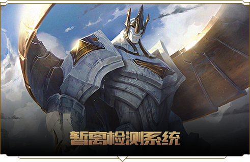
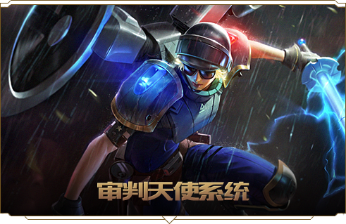
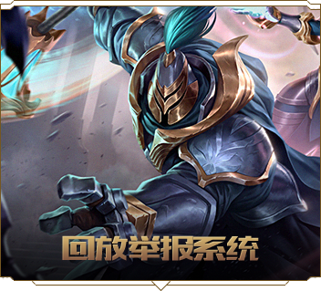
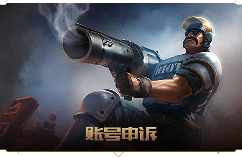

秩序殿堂是《英雄联盟》伸张正义、惩恶扬善的神圣之地。在这里，召唤师可以认识守护着游戏环境正义的每一位骑士，了解他们各自的职责，同时学会如何利用他们来保护自己，揭露不良行为，为正义之地的环境贡献一份力量！









Q：暂离检测系统是什么？
A：暂离检测系统是一个通过结合对局中其他玩家的举报与玩家实际游戏行为检测，针对玩家在对局中离开游戏和停止活跃的行为进行自动处罚的系统。
Q：送人头检测系统是什么？
A：送人头检测系统是一个通过结合对局中其他玩家的举报与玩家实际游戏行为检测，针对玩家在游戏中故意破坏竞技公平的行为进行自动处罚的系统。
Q：即时反馈系统是什么？
A：即时反馈系统是对召唤师的不当言行给予迅速反馈，引导召唤师在对局中积极游戏，维护峡谷战斗秩序的监控系统。
Q：审判天使系统是什么？
A：LOL审判天使系统是一套借助玩家的力量举报故意送人头、使用外挂的系统。
Q：荣誉系统是什么？
A：您可以在游戏结束后为您的队友点赞，同时接受队友的赞誉。随着荣誉等级的提升，您同时还将获得更多奖励。
Q：送人头检测系统是什么？
A：送人头检测系统是一个通过结合对局中其他玩家的举报与玩家实际游戏行为检测，针对玩家在游戏中故意破坏竞技公平的行为进行自动处罚的系统。